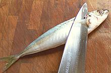
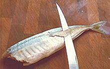

This is a worldwide fish, found in all temperate and tropical salt water regions. It is not related to Mackerel, but can be treated similarly, except where the Mackerel's oiliness is important (smoking, pickling). This fish can get up to 18 inches, but the photo specimen was 14-3/4 inches long and weighed 1 pound 2-3/8 oz. They are often marketed much smaller, around 7 inches. They are a popular eating fish in Hawaii. These fish have enough scales to be kosher. IUCN Red List LC (Least Concern).
More on Scad.
|


|
I rather like this fish, particularly in the 8 to 10 inch size prepared as shown to the left and deep fried in olive pomace oil. For fish larger than 10 inches I fillet them, lightly dust the fillets with rice flour, and pan fry them. This fish is a little too thick to pan fry on the bone. I also enjoy them poached, though the flesh has a slightly drier mouth feel (add a little more butter to the sauce). Of course, whatever way they are cooked, I eat them with my usual Lemon Wine Sauce. The flesh is tasty and very firm, breaking apart into large flakes. It isn't as strong flavored as mackerel and has much less oil. Larger fish can be baked or otherwise cooked like a similar sized mackerel, and since they stay firm they can easily be disassembled before serving if desired. See below about the hard scutes near the tail. The flesh is also durable enough to use in soups and stews. Buying: Like other scads, Mackerel Scad is found mostly in Philippine fish markets. Here in Los Angeles we have one of those near every major hospital complex, because our health care system runs mainly on Filipino immigrants. The photo specimen was purchased at a large Philippine market in Eagle Rock, for 2016 US $1.99 / pound. Scales: Like other Scad, this fish has a modest number of small scales up at the head end. They scrape off easily with little flying about. Scutes: As with other "hard tail" fish, if you are going to leave the skin on, you must remove the strip of hard "scutes" along the lateral line near the tail. Just make a shallow cut through the skin on each side of the scutes. Get the tip of your fillet knife under the scutes at the forward end, and pull them up as you shave them off. They are too small in the curved part to be a problem. Cleaning: Larger fish can be cleaned in the normal manner. The gills are not hard to pull, but tend to break up - use your long nose pliers. Small ones are easier done by first removing the head (not a bad idea for larger ones either). Cut diagonally under the pectoral fin in a line to pass just aft of where the pelvic fins attach (see photo). Cut through the backbone with your kitchen shears. Cut the belly from the vent forward to under the chin, or where the head was if you cut it off. Cut off the pelvic fins. Fillet: You can fillet this fish quite easily, as it has a coherent, easy to follow bone structure. For small fish it may not be worth the trouble, depending on how you intend to cook them. Fillets are difficult to skin - best to leave the skin on. Skin: The skin is thin and difficult to remove. It has significant shrink but poor adhesion. If pan frying, when you flip it skin side down, immediately push it flat with your turner for a few seconds. It will remain flat. The skin is also not much of a problem when fillets are poached. Yield: The 1 pound 2-3/8 ounce scad in the top photo yielded 10-3/4 oz of skin-on fillet (59%), a pretty decent yield due to it's small head and light bones. Stock: The head, bones and fins make a surprisingly clear stock which has a distinct but pleasant flavor and very moderate oil. Use your gravy separator to remove the oil. |